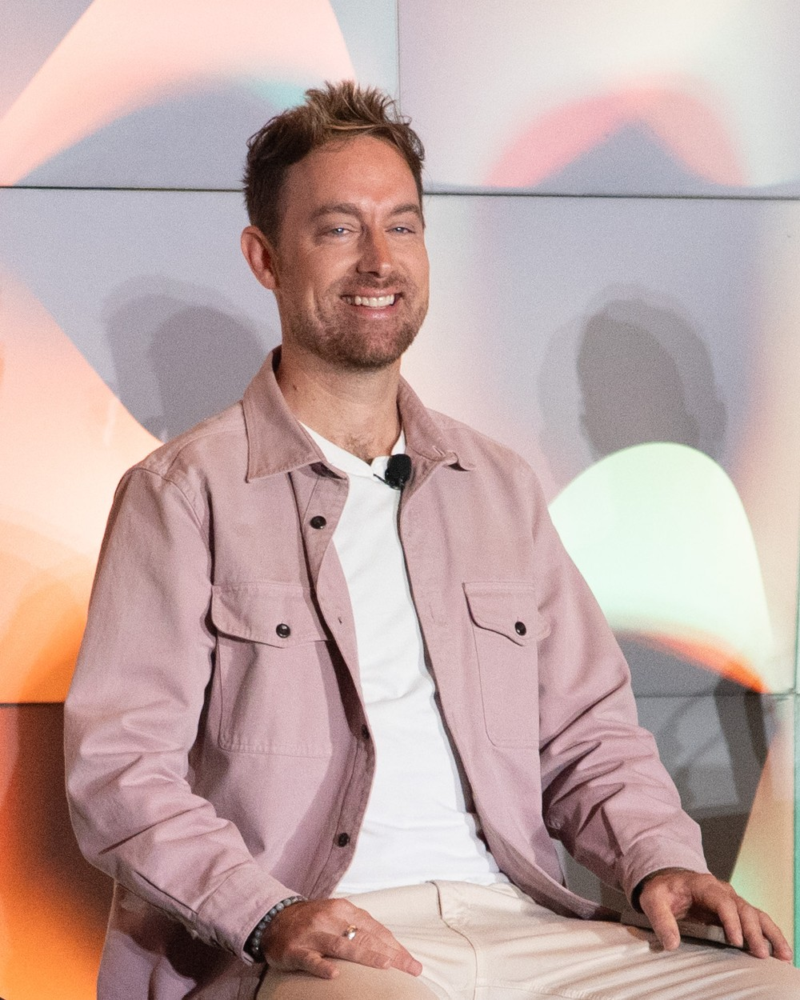

Keynotes · Workshops · Panels
3 billion views.
Earned, not bought.
Thirteen years giving legacy entertainment brands a second act — a holiday tradition generations old, a premiere unlike anything audiences had seen, a music publication older than television.
across platforms
The Rockettes
Wizard of Oz launch
Billboard
The talks
3 Billion Views
Most organizations treat organic reach as what happens before the ad spend kicks in. It is usually the other way around. This session breaks down how legacy entertainment brands built enormous audiences by finding the stories they already had, and what it takes to run that inside a real organization with real approval chains.
- Find the story your brand already has before commissioning a new one
- Build a creator program that reads as genuine rather than bought
- Measure earned work in terms leadership will actually fund
Industry variant
Nobody Has Seen Before
A live experience cannot travel to its audience, has no packaging, and often has no reference point people can picture. This session works through building anticipation for shows and premieres audiences had no frame for, including the Wizard of Oz premiere at Sphere and a holiday tradition turned into a year-round cultural brand.
- Build anticipation for something audiences cannot yet picture
- Design moments people want to film without being asked
- Turn attention into demand, not just impressions
What organizers say

August 2026
I was riveted. Everett’s case studies were impactful. He is just like us, facing similar struggles with proving ROI in the social space, but he showed us different ways to make content meaningful and resonant. 10 out of 10. Would ask him to speak again.
Elise Ramer, APR, CPRCVice President of Public Relations, Premier Sotheby’s International Realty
Formats
Recent stages
Tell me about the room
and what it needs.
Based in New York City and available to travel. For the fastest reply, include your event date, city, audience size, and who is in the seats. Fees vary by format, travel, and organization type — reduced terms for universities, nonprofits, and regional associations.